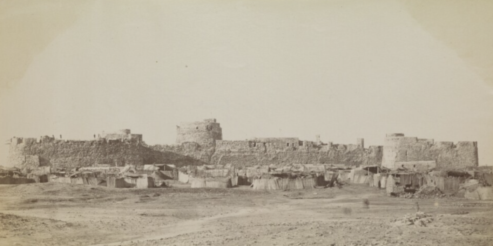

About the Project
The Bahrain Fihrist project aims to create a comprehensive bibliography of works related to Bahraini history. By bringing together both primary sources and scholarly studies in one accessible platform, we hope to facilitate research and deepen understanding of Bahrain's rich historical heritage.
This digital bibliography serves as a resource for academics, researchers, students, and anyone interested in the history of Bahrain and the wider Gulf region. Our team carefully curates and organizes these references to ensure the highest standards of academic rigor.
The term "Fihrist" (فهرست) refers to a catalog or index in Arabic, reflecting our mission to systematically organize and present historical works about Bahrain.

'Old Portuguese Fort, Bahrein' [20r-c] (1/1), British Library: Visual Arts, Photo 355/1/39, in Qatar Digital Library.
About the Founder
Adam Ramadhan
PhD candidate at Universiteit Leiden working on the social and intellectual history of early Shiʿi Islam.
Learn More